La visión completa de TERRAF vs la realidad actual (v0.00000001). Un sistema ambicioso que integra teledetección satelital, métodos geofísicos e inteligencia artificial para exploración mineral. Descubre qué funciona hoy, qué falta por construir, y cómo puedes ser parte del desarrollo.
📢 ¡TUS APORTACIONES MARCAN LA DIFERENCIA!
Tus donaciones ayudan a mantener las clases de matemáticas 100% GRATIS y me permiten dedicarme al desarrollo indie de software estudiantil de geofísica como PyPozo. ¡Juntos democratizamos la educación y la ciencia!
🙏 ¡Gracias a mis patrocinadores y a quienes me invitaron un café! Acabo de cambiar de computadora (ASUS TUF Gaming F16) para seguir trabajando en proyectos que benefician a toda la comunidad.
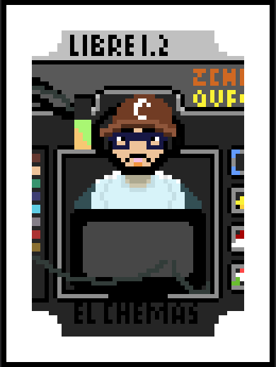
José María García Márquez
Geofísica con propósito. Ciencia que se entiende.
🚀 Programador indie • Software geofísico + videojuegos educativos
PERFIL_PROFESIONAL.exe
─
□
×
> Ingeniero Geofísico UNAM
> Desarrollador Python especializado
> Divulgador científico activo
> Hardware: ASUS TUF Gaming F16 💻✨
> Estado: Procesando imágenes de satélite
> █
10+
Proyectos completados
60+
Suscriptores en YouTube
200+
Commits en GitHub
📚
LEE MI BLOG
Tutoriales de geofísica, Python, y divulgación científica. Conocimiento abierto para todos.
📖 EXPLORAR¿Te interesa el gaming y los videojuegos?
🎮 CHEMITAS DEV — Estudio Indie👤 Mi Historia Profesional
Formación Académica
Ingeniero Geofísico
Facultad de Ingeniería UNAM
2018-2023
Facultad de Ingeniería UNAM
2018-2023
PioPetro Summer Internship
Conferencias sobre Intervención de Pozos, Aprendizaje Automático y Fracturamiento Hidráulico
06/2024 – 08/2024
Conferencias sobre Intervención de Pozos, Aprendizaje Automático y Fracturamiento Hidráulico
06/2024 – 08/2024
Stack Tecnológico
Lenguajes:
Librerías:
Especialidades:
Logros Destacados
✅ Desarrollo de VESpy (Python)
✅ 10+ proyectos de consultoría
✅ Canal educativo 60+ suscriptores
✅ Divulgación científica activa
✅ Desarrollo de herramientas open source
🎓 Clases de matemáticas gratuitas
📊 Proyectos Destacados
[TRE-INVERSIÓN]
Detección de Cuerpos Cavernosos
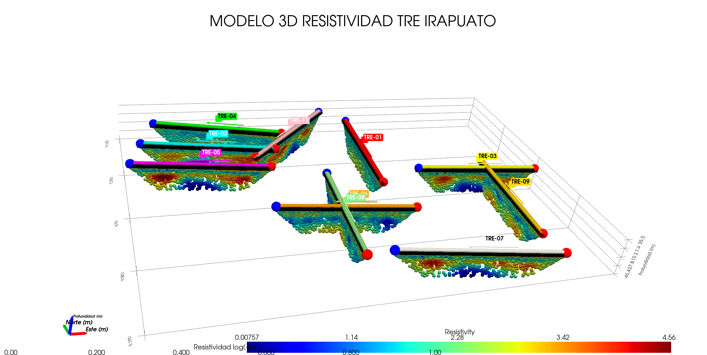
⚡ Inversión 2D
🐍 ResIPy + Python
🕳️ Alta resistividad
Inversión de múltiples líneas de TRE para detectar cuerpos cavernosos de alta resistividad en el subsuelo. Procesamiento avanzado con ResIPy, scipy, numpy y librerías científicas de Python.
[GPR-INDUSTRIAL]
Localización PEMEX Monterrey
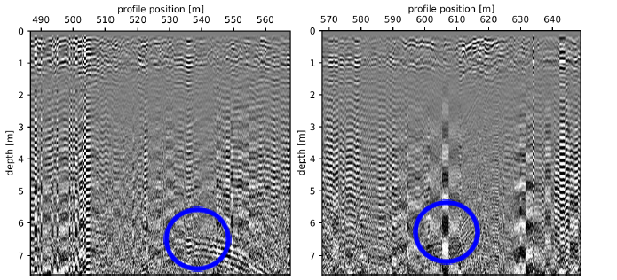
📏 6.3 km lineales
🎯 15 levantamientos
⚡ GPRPy processing
Localización precisa de tuberías industriales mediante Ground Penetrating Radar para operaciones críticas de PEMEX.
[MASW-GEOTECNIA]
Caracterización Monterrey
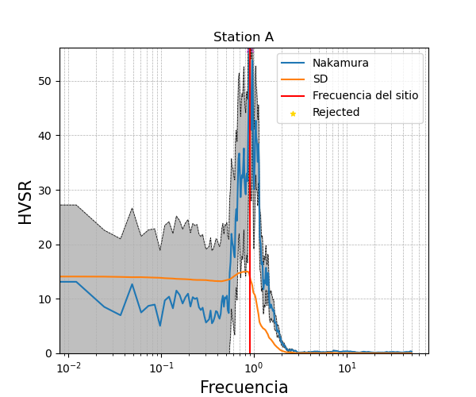
🏗️ Geotecnia
📊 Perfiles Vs
🧮 Inversión
Análisis MASW para caracterización geotécnica del subsuelo. Perfiles de velocidad para diseño de cimentaciones.
[TRE-HIDROGEOLOGIA]
Acuíferos Coahuila
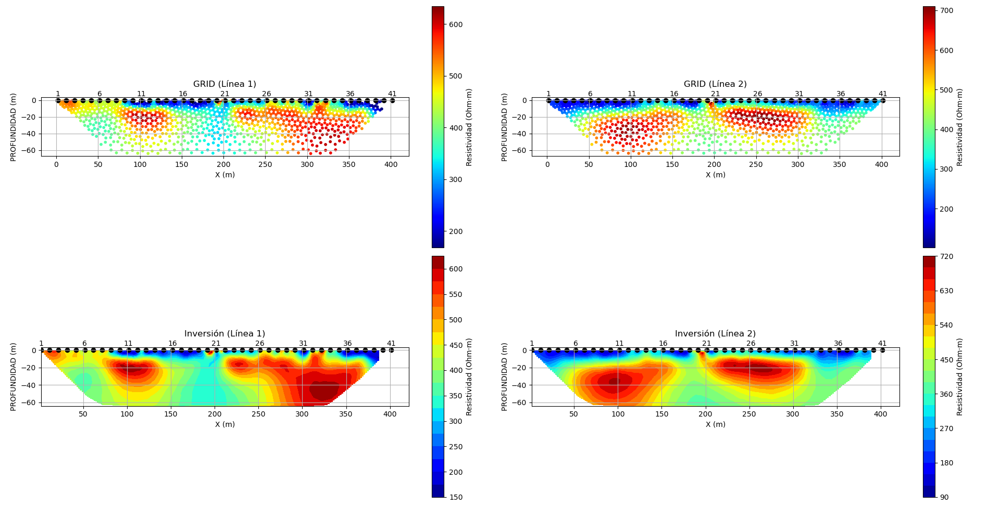
⚡ Dipolo-Dipolo
💧 Agua subterránea
🧮 Pseudo-3D
Exploración hidrogeológica con TRE para localización de acuíferos en zona árida de Acatita, Coahuila.
[OPEN-SOURCE]
PyPozo 2.0 Development
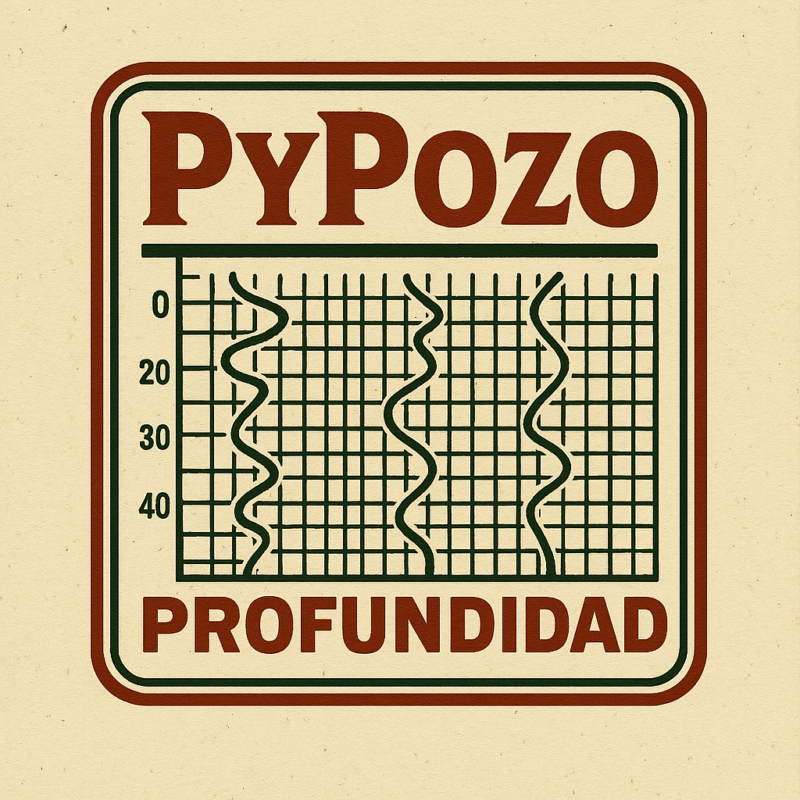
🐍 Python
🖥️ GUI
🛢️ Petroleum
Aplicación GUI profesional para análisis completo de pozos petroleros. Herramienta avanzada con interfaz moderna.
[OPEN-SOURCE]
VESpy Development
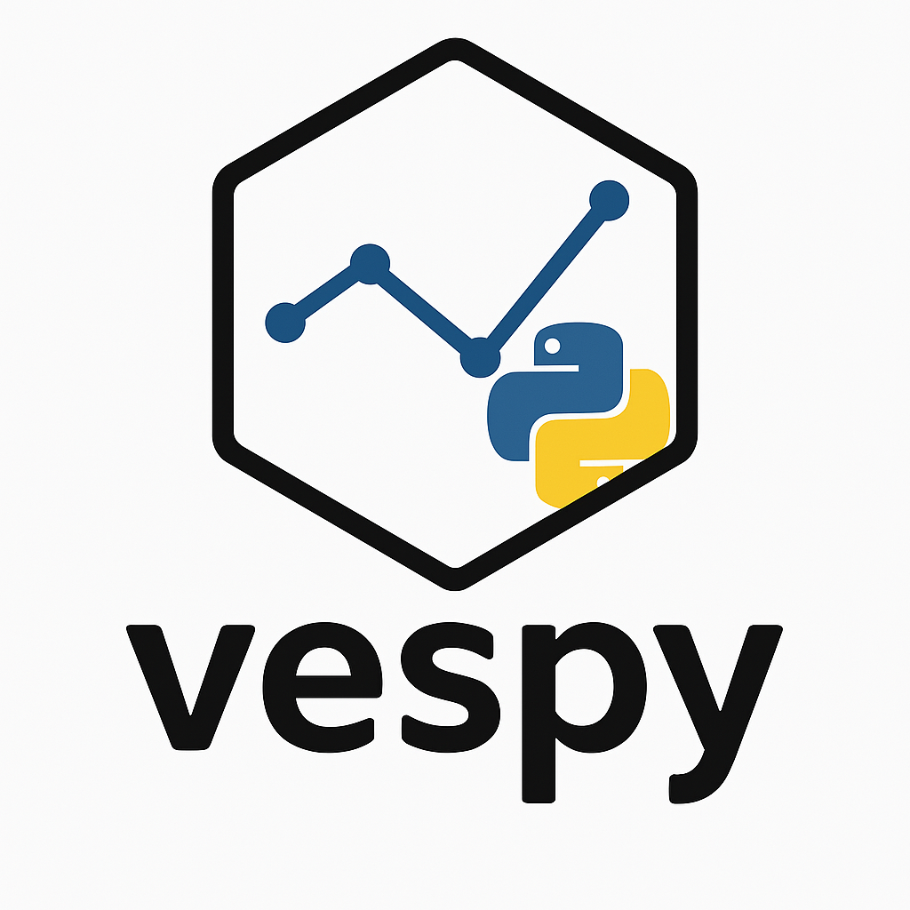
🐍 Python
📈 Inversión
🌍 Open Source
Librería Python para procesamiento e interpretación de Sondeos Eléctricos Verticales (VES).
[INVESTIGACIÓN]
TERRAF - Sistema Integrado de Prospección Mineral
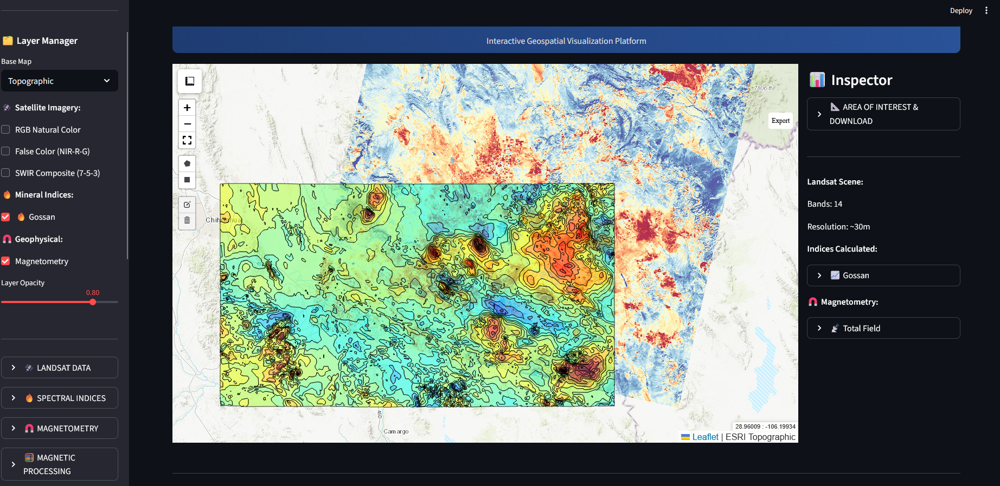
🐍 Python
🛰️ GEE
🧲 Geofísica
🤖 ML
Plataforma Python para exploración mineral que combina métodos geofísicos (magnetometría, gravimetría, inversión 3D) y teledetección satelital (Landsat, Sentinel-2) vía Google Earth Engine. Incluye deconvolución de Euler, inversión de susceptibilidad magnética, cálculo de índices espectrales (CMR, GOSSAN, óxidos de hierro) y machine learning para mapas de prospectividad mineral. Stack: NumPy, SciPy, Pandas, Streamlit, Folium, GeoPandas, Google Earth Engine API.
[SEV-HIDROGEOLOGIA]
Sondeos Eléctricos Santo Tomás de las Flores
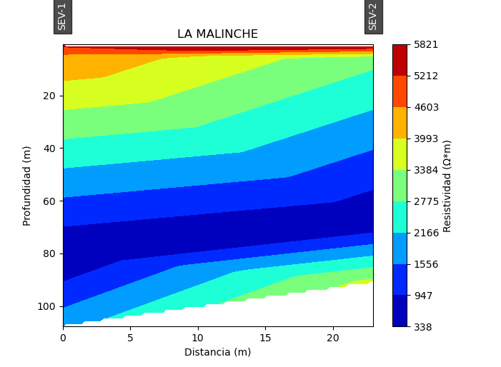
💧 Acuífero
🐍 VESpy
📉 Savitzky-Golay
Sondeos Eléctricos Verticales para identificar zonas con potencial acuífero en Santo Tomás de las Flores, Estado de México. Procesamiento con VESpy: filtrado Savitzky-Golay e inversión para localizar unidades hidrogeológicas favorables a la perforación de pozos.
[GPR-ARQUEOLOGÍA]
GPR República de Perú 57, Centro Histórico CDMX
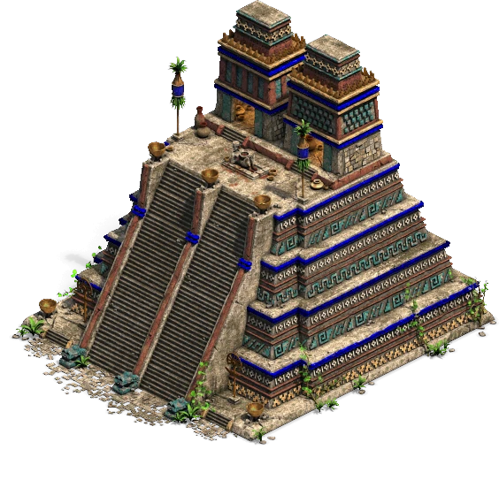
🏺 Arqueología
📡 600/200 MHz
🗺️ 3 mallas
Estudio GPR para detectar estructuras arqueológicas antiguas (mexica/novohispana) en el Centro Histórico de la CDMX. Antenas duales 600 y 200 MHz, 3 mallas de medición con interpolación Kriging y mapas de profundidad. Evaluación de viabilidad de una bodega subterránea sin afectar el patrimonio cultural.
[OPEN-SOURCE]
hvsrlearn Development
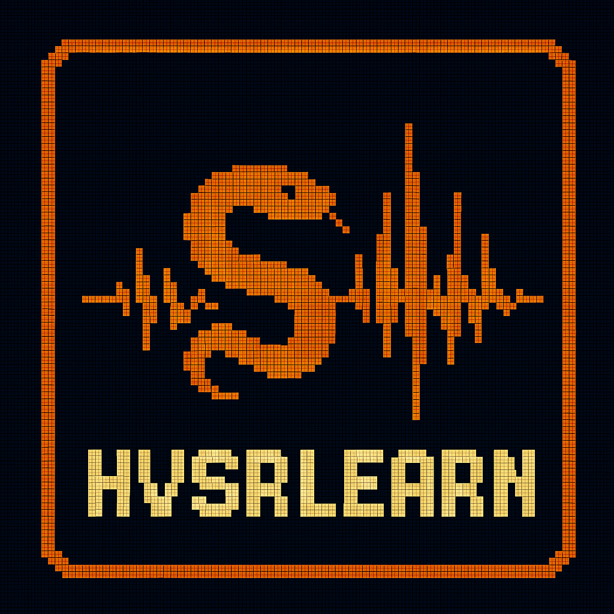
🐍 Python
📈 HVSR
🖥️ GUI
Herramienta open-source para procesamiento de ruido sísmico ambiental con la técnica de Razón Espectral Horizontal/Vertical (HVSR). Incluye interfaz gráfica para picking e interpretación de microtrepidaciones.
🛠️ Servicios Profesionales
Estudios Geofísicos
Caracterización completa del subsuelo con métodos avanzados
• GPR para arqueología y obra civil
• MASW para geotecnia
• VES para hidrogeología
• TRE para contaminación
Desde:
$8,000 MXN
Desarrollo Python
Soluciones de software geofísico a medida
• Scripts de procesamiento
• Automatización de workflows
• Interfaces gráficas
• APIs y web apps
Desde:
$2,000 MXN
Capacitación
Cursos y workshops especializados
• Python para geofísica
• Métodos geofísicos
• Procesamiento de datos
• Workshops empresariales
Desde:
$2,500 MXN
Consultoría
Asesoría técnica especializada
• Diseño de campañas
• Análisis de viabilidad
• Interpretación avanzada
• Revisión técnica
Desde:
$500 MXN/hr
Asesoría Académica
Apoyo especializado en materias técnicas avanzadas
• Tratamiento de señales digitales
• Inversión geofísica
• Estructura de datos y algoritmos
• Programación Orientada a Objetos
Desde:
$100 MXN/hr
Clases de Matemáticas GRATIS
Educación matemática gratuita para estudiantes
• Matemáticas para secundaria
• Matemáticas para preparatoria
• Cálculo diferencial e integral
• Geometría y álgebra
100% GRATUITO
Proceso de Trabajo
01
Consulta inicial
Análisis de necesidades y objetivos
→
02
Propuesta técnica
Metodología y cotización detallada
→
03
Ejecución
Desarrollo del proyecto con seguimiento
→
04
Entrega
Resultados finales y capacitación
🎓 Educación y Divulgación
60+
Suscriptores YouTube
5+
Videos educativos
6
Notebooks en desarrollo
Canal YouTube
Notebooks Interactivos
Tutoriales prácticos con código Python
GPR
SEV
HVSR
SIG
📘 Serie SEV (Sondeos Eléctricos Verticales)
Parte del proyecto VESpy ⚡ - App para procesamiento de SEV
📗 Otros Notebooks
Mi Misión Educativa
"Democratizar el conocimiento geofísico. Crear puentes entre la teoría académica y la aplicación práctica. Formar a la próxima generación de geofísicos con herramientas modernas y mentalidad open source."
📚 Libros que Recomiendo
Economía Básica
Fundamentos económicos explicados con claridad. Esencial para entender el mundo actual.
La Física del Futuro
Visión fascinante de las tecnologías que transformarán nuestro mundo. Inspiración pura.
Eso No Está en Mi Libro de Prehistoria
Arqueología fascinante que desafía lo que creías saber. Perfecta conexión con la geofísica.
Cuando el Hierro era Más Caro que el Oro
Historia económica fascinante. Cómo los recursos han moldeado la civilización.
Por Qué Fracasan los Países
Análisis profundo sobre instituciones y desarrollo. Lectura obligatoria para entender el mundo.
Más Recomendaciones
Continuamente actualizando mi lista de lecturas recomendadas.
📝 Blog Técnico
Artículos sobre geofísica aplicada, desarrollo Python, open source y divulgación científica. Comparto conocimiento técnico de forma clara y accesible.
4+
Artículos técnicos
3
Tutoriales prácticos
100%
Open Source
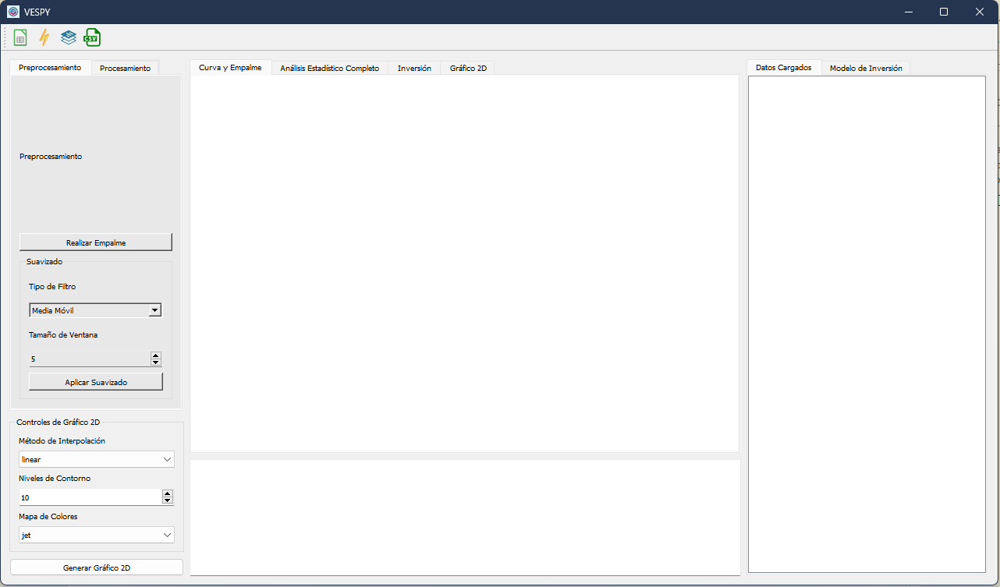
[2024-11-15]
VESpy: Revolucionando los Sondeos Eléctricos
Desarrollo y funcionalidades de VESpy, mi librería Python para procesamiento e interpretación de Sondeos Eléctricos Verticales. Una herramienta que democratiza el acceso a técnicas avanzadas de geofísica.
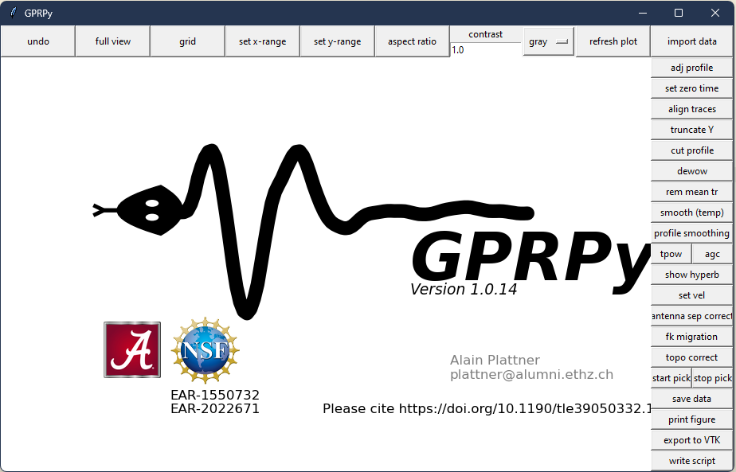
[2024-10-28]
GPRPy: Procesamiento de Radar de Subsuelo
Guía completa para el procesamiento de datos GPR usando GPRPy. Desde la adquisición hasta la interpretación final, con ejemplos prácticos de casos reales en Monterrey.
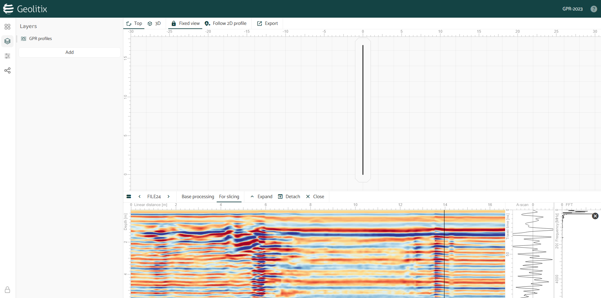
[2024-09-20]
Geolitix: Python SIG para Geofísica
Integración de sistemas de información geográfica con métodos geofísicos. Cómo Python puede transformar la visualización y análisis espacial de datos geofísicos.
[2024-08-15]
Open Source: El Futuro de la Geofísica
Por qué el software libre es fundamental para el avance de la geofísica. Reflexiones sobre democratización del conocimiento, colaboración global y sostenibilidad científica.
📬 Conectemos
¿Tienes un proyecto geofísico en mente? ¿Necesitas capacitación? ¿Quieres colaborar en investigación?
¡Hablemos y creemos algo increíble juntos!
Disponibilidad y Tiempos
Respuesta email: 24-48 horas
Consulta inicial: Sin costo
Horario atención: Lun-Vie 9:00-18:00
Zona horaria: GMT-6 (México)